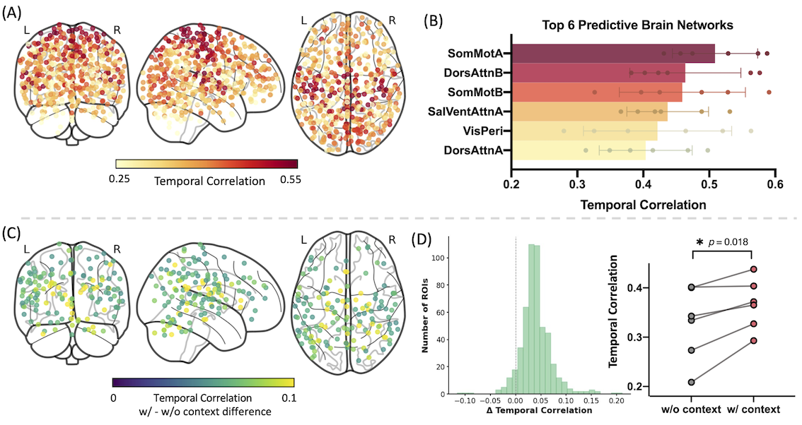
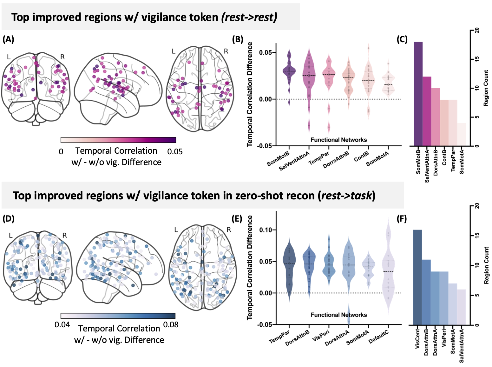
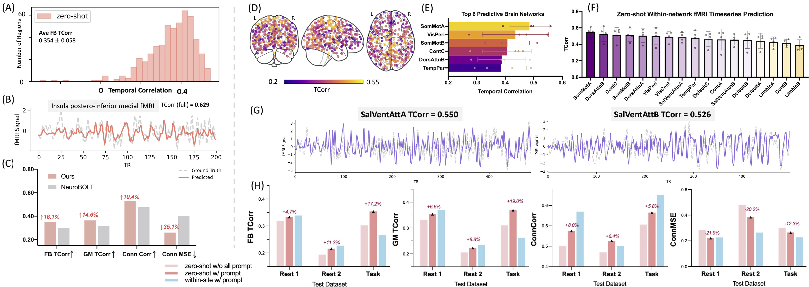
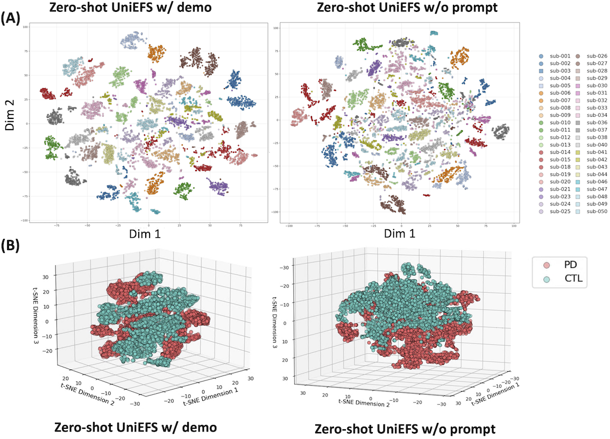

Abstract
Functional magnetic resonance imaging (fMRI) provides dynamic measurements of human brain activity at high spatial resolution and depth, but its use is constrained by high cost, limited accessibility, and strict acquisition requirements. Synthesizing fMRI data from more accessible, non-invasive modalities such as electroencephalography (EEG) offers a promising alternative, enabling inference of deep brain dynamics from low-cost scalp recordings in naturalistic settings. Despite recent progress, existing EEG-to-fMRI translation methods typically rely on region-specific models and offer limited support for subject-level and dataset-level heterogeneity, restricting their generalizability. We propose UniEFS, a unified EEG-to-fMRI Synthesis model that enables full-brain fMRI reconstruction while accommodating varying demographic and physiological contexts within a single model. Our approach leverages a pretrained fMRI decoder to embed rich spatial priors and introduces condition-aware prompt tokens that encode subject-level and experimental metadata, enabling effective handling of heterogeneous datasets. We extensively evaluate the model performance on eyes-closed resting-state data and demonstrate that it can reliably reconstruct temporally-resolved whole-brain fMRI activity, with potential to generalize to task-based fMRI and clinical populations in a zero-shot manner.
Key Contributions
- Whole-brain EEG-to-fMRI synthesis. A unified framework that reconstructs fMRI activity spanning hundreds of functional regions (cortical, subcortical, and cerebellar) from EEG using a single model. Pretraining the fMRI decoder on unpaired fMRI data embeds strong spatial priors for accurate, efficient reconstruction across brain regions.
- Context-aware EEG encoding. Prefix prompt tokens encode dataset-specific and subject-level metadata — dataset, age, sex, and per-frame vigilance state — letting the model adapt to demographic attributes and physiological states and enabling unified training across heterogeneous datasets.
- Systematic evaluation of predictive power. Extensive evaluation of fMRI time-series reconstruction across cortical and subcortical regions and whole-brain functional connectivity, including zero-shot transfer to a task-based condition and an independent clinical (Parkinson's disease) EEG-only dataset.
Method Overview
UniEFS performs frame-by-frame fMRI prediction: given a sliding window of EEG preceding each fMRI time point, the model predicts the corresponding ROI-level fMRI frame (DiFuMo parcellation, 512 ROIs). Training proceeds in two stages.
Stage 1 — fMRI Pretraining & Adaptation via Masked Signal Modeling (f-MSM). A transformer encoder-decoder is pretrained on large-scale unpaired fMRI (HCP) with a masked-reconstruction objective (50% mask ratio), learning population-level representations of instantaneous brain states. The model is then fine-tuned on the paired dataset to bridge the domain gap while preserving generalization.
Stage 2 — Context-aware EEG-to-fMRI Mapping. A multi-dimensional EEG encoder (spatiotemporal + multi-scale spectral modules) projects EEG into the pretrained fMRI latent space. Learnable prefix prompt tokens (dataset, age, sex, vigilance) condition the representation, and a LoRA-inspired low-rank alignment matches EEG and fMRI latents. The frozen, domain-adapted fMRI decoder then reconstructs the full-brain signal. Training combines an alignment loss with a reconstruction loss (weighted MSE + spatial-correlation).
Main Results
UniEFS consistently outperforms state-of-the-art EEG-to-fMRI translation baselines in reconstructing regional time courses across the whole brain. Reconstructed and ground-truth power spectral densities show strong correspondence (Pearson r = 0.93), and context embeddings — particularly vigilance — yield the largest gains in arousal- and attention-related regions.
| Model | FB TCorr ↑ | GM TCorr ↑ | SC TCorr ↑ | CB TCorr ↑ | Conn Corr ↑ | Conn MSE ↓ |
|---|---|---|---|---|---|---|
| UniEFS (Ours) | 0.367 | 0.394 | 0.276 | 0.247 | 0.527 | 0.233 |
| NeuroBOLT | 0.331 | 0.357 | 0.258 | 0.216 | 0.455 | 0.349 |
| Li et al. (2024a) | 0.312 | 0.329 | 0.253 | 0.236 | 0.535 | 0.217 |
| BEIRA | 0.171 | 0.196 | 0.086 | 0.063 | 0.459 | 0.368 |


Beyond within-domain evaluation, UniEFS transfers zero-shot from resting-state to an auditory task, preserves subject-specific connectome fingerprints, and — on an external Parkinson's disease EEG-only cohort — produces fMRI-informed latent embeddings that cleanly separate patients from controls without any fine-tuning or disease supervision.


BibTeX
@inproceedings{li2026uniefs,
title = {Mind the State: Towards Unified, Context-Aware EEG-to-fMRI Synthesis},
author = {Li, Yamin and Wang, Shiyu and Li, Chang and Lou, Ange and
Pourmotabbed, Haatef and Goodale, Sarah and Englot, Dario J. and
Moyer, Daniel and Bayrak, Roza G. and Chang, Catie},
booktitle = {Proceedings of the 43rd International Conference on Machine Learning (ICML)},
series = {PMLR},
volume = {306},
year = {2026}
}